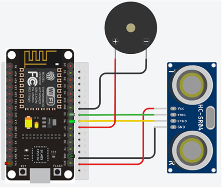
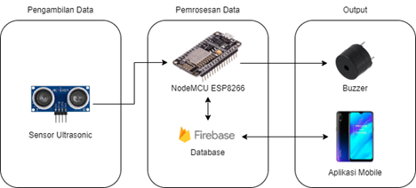
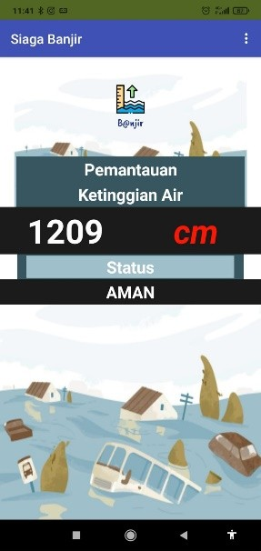

Sistem Peringatan Dini Banjir Berbasis IoT



Deskripsi Proyek
Sistem berbasis IoT yang dirancang untuk memantau ketinggian air secara real-time dan memberikan peringatan dini melalui notifikasi aplikasi mobile ketika terdeteksi potensi banjir. Sistem ini menggunakan sensor ultrasonik HC-SR04 untuk mengukur ketinggian air dan mengirim data ke platform Firebase untuk diproses dan ditampilkan pada aplikasi Android.
Fitur Utama
- Pembacaan ketinggian air realtime
- Notifikasi push ke smartphone ketika mencapai level bahaya
- Antarmuka untuk monitoring lokasi terpasang
- Multiple threshold level (siaga, waspada, bahaya)
Teknologi Digunakan
ESP32
Firebase Realtime DB
MIT App Inventor
Buzzer
HC-SR04 Sensor
Tantangan & Solusi
Koneksi Internet Tidak Stabil
Mengimplementasikan buffer data lokal pada ESP32 yang akan disinkronisasi ketika koneksi kembali normal
Akurasi Pembacaan Sensor
Menambahkan filter kalman dan pembacaan rata-rata dari 10 sample untuk mengurangi noise